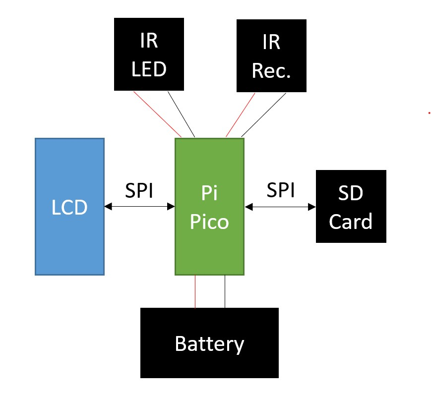
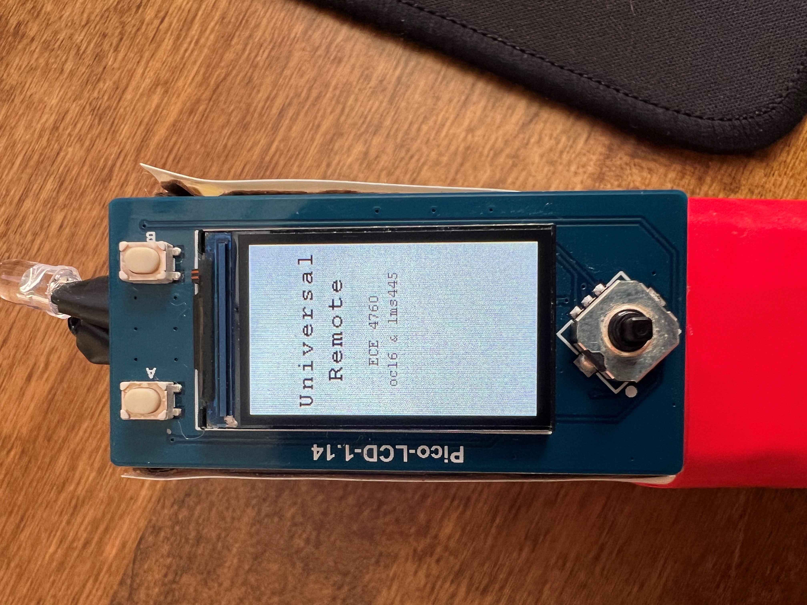
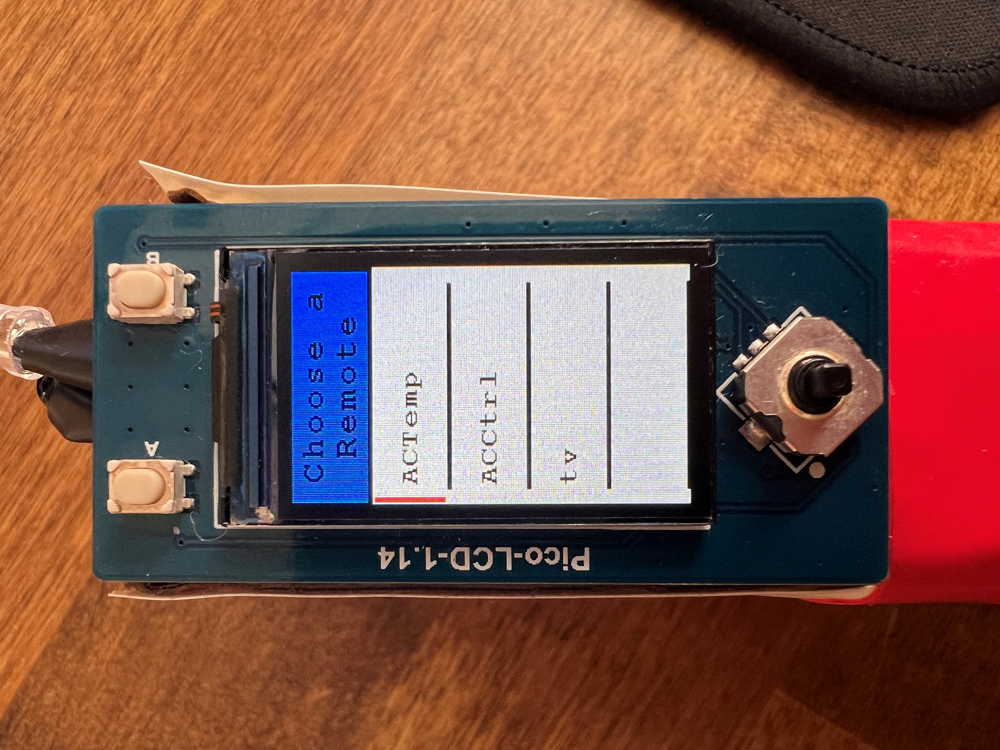
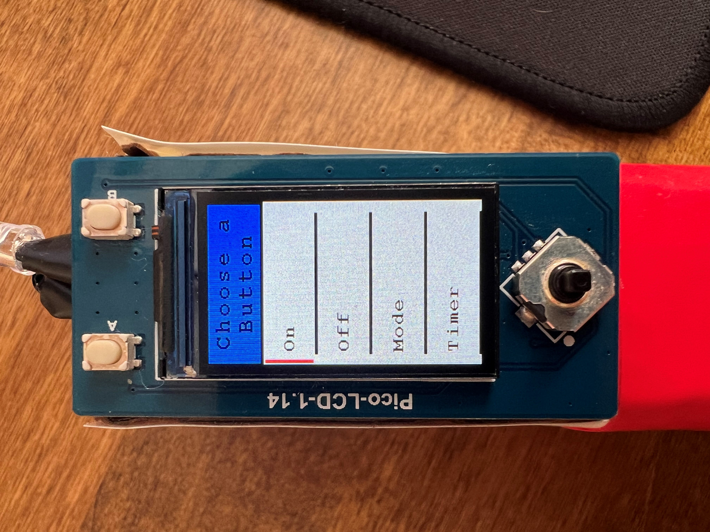
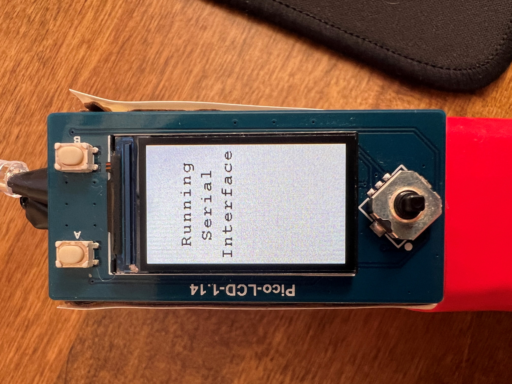
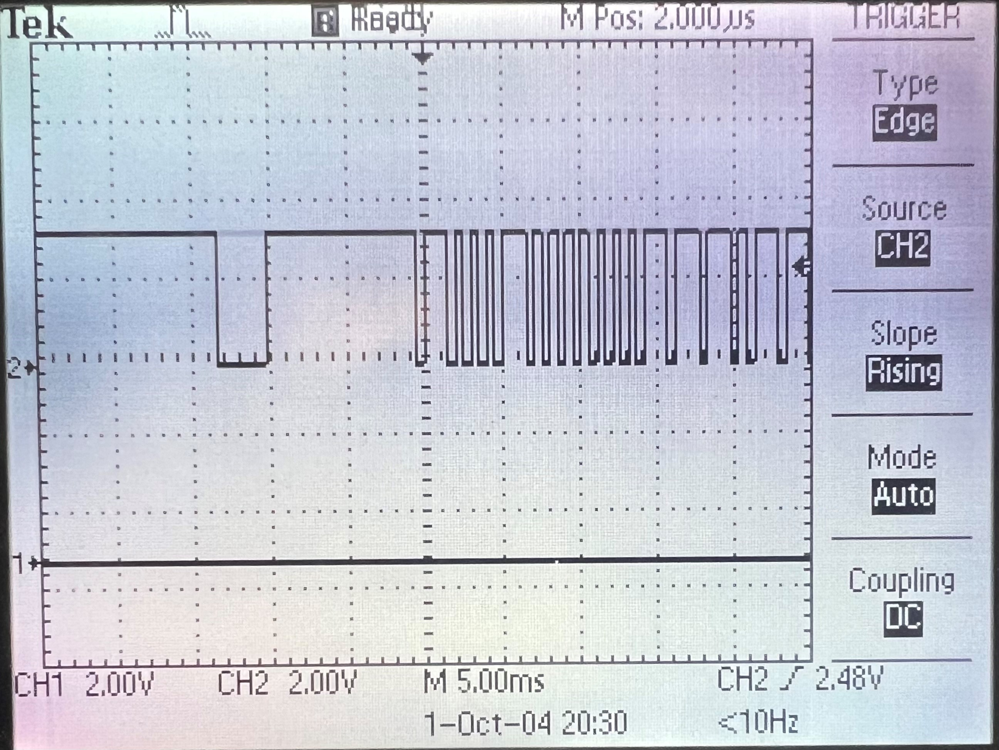

High Level Design
Every decision made in the creation of this project was geared towards ensuring its usability in the real world. In our project proposal we envisioned a remote the size of any average TV remote that could replace the devices that control anything from LED light strips to air conditioning units. We knew that the range of infrared communication protocols used would cause issues if we were not clever about how we recorded the signals. We also knew that it was not feasible to add a small keyboard to the device itself given the time constraints of the project, so a serial interface needed to be developed for the programming of buttons and remotes. We also strongly wanted this device to be able to be used in our homes, and that objective drove our implementation decisions of what the user interface looks like, how we store the user’s data, and how it is powered.

Design Tradeoffs
Since this idea had no advanced circuitry, most of the development time was spent on the software. The communication between the Raspberry Pi Pico and the LCD screen and SD card was done over the two SPI channels natively supported by the Pico. We also decided that a serial interface over UART was the most feasible way to allow the user to type in names for buttons and remotes. This simplified the wiring considerably but meant that extensive software development was needed.
Infrared Communications
For this project, infrared communication makes up the baseline goals. By utilization of an Infrared (IR) receiver, we were able to detect and record a wide range of IR signals to be able to later replicate via our IR LED setup. We specifically only utilize these components when the expected behavior of the system is to be using them at that moment in time. Due to the potential strength of IR, it is very easy for our system to potentially pick up different IR signals that the user is not trying to interface with our remote with. As a result, we needed to be careful that the system only listens to the receiver during times when they are trying to program the receiver.
Serial Interface
The serial interface makes up the primary way that the user can program the system’s buttons and remotes, both in the addition and removal of them. In order to begin utilizing it, the user needs to connect the USB to their computer and open a compatible terminal that can interface with the device, such as PuTtY. For the setup of the program, we set the serial interface at a baud rate of 115200, a standard throughout the course.
Due to the long relatively long prompts at first, the serial input requests that the user enters a number in response to the initial prompt of whether they want to add a button, remove a button, or remote. As adding a button requires a specification for a remote, the adding remote functionality is integrated into the add button procedure.
From this point the interface asks for a remote name, listing the currently assigned remote names for ease of access for reference. For removing remotes/buttons, it is enforced that the name inserted by the user matches, with an option to quit out. Otherwise, for add buttons, it allows for a new name to be typed and adds the remote as long as the remote size does not exceed the capacity of the device (10 remotes max, 8 buttons per). At this stage, the remove remote option finishes user input and wipes the inserted remote data permanently.
A similar procedure happens with selecting a button name. For delete, it simply deletes the button. For addition of the button, the system pauses and enables the IR receiver system to record and encode an input signal, automatically detecting the end of signal that the user inputs and setting up all it needs internally.
After every request is fulfilled, the system closes out once more and relinquishes control back to the LCD screen until the button to re-open the interface is once more pressed.
User Interface
The desire for practicality limited the size of screen and buttons that we could use in our design. We selected an LCD screen and button set that has been adapted to be used specifically with the Raspberry Pi Pico because of its compact size and preexisting C library. This specific display communicates over SPI, and it uses the SPI1 channel on the Pico. The buttons each have their own GPIO pin which means that, by the final implementation, we have used almost all of the pins of the Pico, but it also means that we do not need any additional logic or hardware to work with the buttons.
The digital interface design was developed to be as clear and streamlined as possible. This means that there are only four main display states. The first display state is the boot screen. This screen lets the user know that the device is running, and it also buys time for the SD card to read all the data before needing to display it.

The next screen displayed allows the user to navigate through their programmed remotes. This “Choose a Remote” screen uses a small red bar on the left-hand side of the screen to show which remote is selected. If there are more than one remote, the user may scroll to their desired remote using up and down on the joystick. The user can then press in or right on the joystick to progress to the buttons stored in the highlighted remote.

Once the user has selected their remote and advanced to the buttons within that selection, the “Choose a Button” screen allows the user to highlight the desired button with the same technique as the “Choose a Remote” screen. If the user wants to broadcast the signal of one of these buttons, they may highlight the button and press the “A” button on the top left of the display plate. If they do not want to broadcast any of these buttons, they may go back to the “Choose a Remote” screen by pressing left on the joystick.

If at any point the user wants to program a new button or remote, they may press the “B” button on the top right of the display plate. This will display the “Running Serial Interface” screen and prevent the user from interacting with the LCD. All the user input will then be handled by the serial interface on a computer.

Data Storage
All data management with the SD card is handled behind the scenes so that the user can simply enjoy using the product. Upon powering the device, all the data is read from the SD card to the Pico, and the data will never be read from the SD card again while the device is powered. The data is written to the SD card any time the user changes something through the serial interface. This limited data handling ensures that all transactions are secure, and no data is lost.
Since we chose to use an SD card as our non-volatile memory solution, there is no concern of storing too much data. The only issue presented by the SD card is the strict communication requirements. To accomplish this system, we used an existing C library that can handle all FAT32 file transactions with the SD card over SPI. Although SPI is a slower method of communicating with an SD card, the protocol is significantly less complicated and suits our needs more appropriately.
Standards and Patents
Our design was not influenced by any government standards due to our exact replication of the already existing infrared remote signals. We also chose to underpower our infrared LED to ensure that we were broadcasting safe levels of infrared light.
We have used libraries for communicating with the LCD screen and SD card. All libraries used are free for public use.
Hardware Design

For the circuitry in place for our system, we had to utilize almost every GPIO Pin, only GPIO14 and GPIO22 remain untouched. In order to showcase the LCD shield in our system in the cleanest way possible in our schematic, No Connections (the X’s) were inserted to dictate the connections of the system. For the LCD, the N.C.s were used to show unused pins. The LCD shield considers all of the grounds as valid, however with ground being ground, it does not have permission over the pin as is the case with GPIO pins. As a result, our ground is still free for other circuitry elements as well. The N.C. on the Raspberry Pi Pico, however, is used to dictate that the pin is being utilized via the shield and, as a result, is unavailable to local circuitry components.
During the assembly of the circuit, we had some issues with having the LCD receiver to output waveforms high enough to be detected as logical high. It was then realized the issue was the input impedance of the Raspberry Pi Pico appeared to be significantly lower than expected, forming an unfavorable voltage divider between the Raspberry Pi Pico and the LCD receiver’s internal resistors. Eventually, it was found that the GPIO pin had automatically enabled a pull-down resistor to ground rather than our observations being the default input impedance. Once we disabled that, we were able to detect signals from our device perfectly fine.
Regarding the mobile powering of our system, a 2xAA battery container was all that was required to power the system. We included a switch so that the user may turn the remote controller on and off as they please to conserve power. We chose to hook this signal up to VSYS to help the system’s stability with the power. The LCD Shield also utilizes it as its effective VDD, however, just like with the case with GND, this does not make a large difference in this case.
In terms of assembly, a lot of the components were soldered in free-space as we felt like there was not enough strict circuit complexity that would require a more PCB/Perfboard approach to the issue.
Software Design
IR Communications
For the IR Communications, the key element is precise timings of the system. As a result, our approach is to halt any potential side-processes of our system as the IR communications are currently undergoing. Two separate approaches were taken in the execution of the receiving and recording of the IR signals and the re-broadcasting of the signals, and these two systems were designed to work together.
IR protocols wildly differ from system to system, so the first element to address is how to properly record and store the information about a given IR signal into our system. After some pondering, the realization was made that there were two key elements that connected all IR signal protocols: Precise timings and a binary state of the IR LED being on or off. As a result, it was decided that the best approach would be to not attempt to decode what the individual IR protocol may be transmitting but instead, directly mimic the signal by precisely measuring each time the signal is toggled from on to off or vice versa. From this information, we can then mimic whatever signal we are trying to without care for what micro-protocol the system may be utilizing.
For the IR receiver, this was tackled via a call to an interrupt. In order to make the timing as good as possible, it simply quickly checks that it is not about to exceed the signal storage’s allotted space in memory and then dumps the system’s precise time into that array for later processing. At the same time, each iteration both iterates the first index of the array that dictates the tail of the signal’s data in the C array alongside resetting the timeout alarm clock information so that the system can automatically and accurately detect when a given IR signal is finished broadcasting both for ease of user experience and to avoid any potential errors.
Once the system detects the timeout of the system has occurred, it encodes the signal before storing it into its proper button. This primarily means that it takes the difference in time between two different steps of the signal to make the data more generalized instead of dictating the exact system time when the user had happened to record the signal. At the same time, this encoding process is careful to preserve the first index of the array that dictates the tail of the signal.
When it comes time to rebroadcast the signal, the LCD button state processing sends out the exact encoded signal associated with the button to an external method to perform the broadcast. This method can read in exactly how much signal it should be broadcasting from the initial index of the encoded signal and from that point, it progresses through the rest of the encoded signal array, utilizing each index to dictate the exact length the process should sleep before toggling the LED once more. Due to the binary nature of the system, it is guaranteed that any swapping of the signal will result in a LED toggling. As a result, attempting to explicitly dictate whether each signal was turning on or off is redundant and we aimed to take full advantage of that fact in our scheme. Once the LED broadcasting is complete, the system simply relinquishes control back to the LCD methods once more to continue processing.
Serial Interface
In order to implement the serial interface for this process, we chose to utilize the protothreads library that were utilized within this course from Lab 02 onwards. Although this added a bit of complexity from the limitations of utilizing a stackless thread by having to dictate several variables as static/global so they won’t relinquish their data every time the PT thread automatically or is told to yield. However, by use of a protothread, there was one key element that we were able to take advantage of for this choice: yielding the code when detecting a signal.
The implementation we chose to employ is to have the serial processing stall on a volatile signal variable dictating that the process is done receiving and encoding the signal that is being received. Usually, this would have to be done via a waiting while loop, constantly leaking processing power into it and presenting a possibility of knocking off the system’s timing. The reason why this needs to be done is to disable the interrupt service routine (ISR) being utilized every time the IR receiver detects a rising or falling edge; it is used to signal to stop attempting to detect the signal, alongside doing final required processing elements. However, utilizing the PT Threads, we can instead simply have it yield until it detects the signal that the IR reading process is done before continuing. This holds importance due to the precise timing the IR mimicking requires. This, alongside the LCD screen entering a stalling programming mode setting, ensures the minimal possible interference with critical timings.
Past this point, nothing too special happens within the serial interface other than regular verifying of inputs and valid setting of parameters, forming a simple FSM program flow described in the high level design section.
LCD Interface
The LCD interface runs entirely on Core 1 of the RP2040 and is run by polling the GPIO pins rather than interrupts due to the use of interrupts in other parts of our code. We also chose to use polling because power consumption is not a large concern in this project as the device will only ever be powered on occasionally. The LCD display library was not written by us (see Appendix E).
The running of the polling is controlled by two access variables that act as spin locks: saveData and runSerialInterface. These two variables control the function of this core to ensure that when either data is being written to the SD card or the serial interface is running, the LCD will not be running. This choice was made because some strange interactions between the cores arose when we approached the memory limit. Core 1 also sleeps for 60000 microseconds every loop to debounce the buttons on the LCD screen.
To display the correct information at any given time, a finite state machine was used in combination with some abstracted display methods. The main state machine is run inside the refreshDisplay(int buttonPressed) method, and this method takes the button that was pressed evaluates what the next state should be. The two main states are the “Choose a Remote” state and the “Choose a Button” state, and these are progressed between each other when the joystick is pressed right or left respectively (this functionality is outlined in the project home page).
Once the state to display is determined, the three helper methods, highlightSelection(), scroll(), and displayMenu(), handle the displaying of the correct data. These methods were written so that any size menu can be used and either state can use the same helper methods to display the correct information. The general display of information process is to first evaluate what needs to be displayed, erase the old information, and display the new information. Running the display in that order means that there is almost no time between erasing the old information and displaying the new information, and that leads to a much more seamless user experience. We also chose to only erase the exact pixels that were displaying the old information instead either the whole screen or chunks of the screen because it reduces flickering during navigation.
The data that is displayed is stored in a different way than the data gathered from the serial interface. This is because we wrote the serial interface and LCD interface code at the same time with little communication. In order to get around this, a convertData() method was written to reformat the serial interface data into the data used in the LCD display methods.
Data Storage
The writing and reading of data to and from the SD card happens over SPI and is configured in a separate file than the code shown in Appendix B. That file structure is outlined by the SD card library (see Appendix E), and results in a consistent SD read a write experience.
In order to ensure that the data on the SD card is up-to-date at all times and the display of data on the LCD interface is fast, the data is only read from the SD card once. This is done during the boot sequence of the remote and is hidden behind the boot screen. This results in the data being immediately populated on the LCD screen when the display switches to the “Choose a Remote” screen. The data is also only written to the SD card when a change is made to the data through the serial interface. This is because writing to an SD card has the chance of accidentally wiping the SD card if the transaction cannot be fully completed. This is also why Core 1 does not run the LCD when the transaction is completing. This has resulted in zero accidental data wipes during testing.
The data is written to and read from the SD card as text line by line. The data is stored in a .txt file and thus our data had to be stored in an intelligent way to ensure fast reading. We chose to store the data in the following form:
remote
“the remote name”
button
“the button name”
signal
“signal[0]”
“signal[1]” …
This form is results in very simple file read and write methods that work flawlessly. This also means that the user is able to modify the data by simply plugging the SD card into their computer. This allows for an even larger degree of customization than any other non-volatile memory options.
Debugging and Testing
Debugging
Debugging our system was very easy initially as we ensured that the serial interface and infrared communications were on a different core than the LCD interface. This breakdown allowed us to test each component on its own to ensure that everything functioned properly before integrating the two. The only bug we struggled with before integration was the issue of non-static variables being unpredictable due to the stack-less threader we used. This bug presented as unpredictable values inside for loops, but we quickly resolved this by making every variable static or global.
Once the two halves were integrated, we ran into many difficult bugs. The first significant bug that we found was a bug with the compiler. When we initially integrated the two halves, we had some arrays that we thought were well within our storage limit because the compiler threw no flags on compilation, but when running the code, we encountered sudden and unpredictable crashing from both cores but never at the same time. Which core crashed and when seemed to be random. This led us down a rabbit hole of ensuring no shared variables were accidentally being written, only one core was running at a time, and eliminating threads. We didn’t think it was a memory issue because a memory issue would have most likely caused the code to crash once the array was initialized, but all of our arrays were global. For some reason the compiler did not flag the memory issue until one of the indices of the arrays was assigned to a value other than null. This is either a compiler issue or it shows more of how global arrays are actually allocated in memory.
Another bug we had was the SD card only being able to access the FAT32 file system occasionally. Basically, we would try to open our data file for reading or writing and the file system would fail to mount. This typically means that the wiring is incorrect, but because it worked most of the time, we knew the wiring was correct. It turns out that the jumper cable connections are not secure enough to allow the SD card to work with certainty. To solve this problem, we soldered all wires related to the SD card to the Pico.
The final bug we struggled to solve was the fact that if you read from or write to the SD card at certain times, the file system will fail to mount. This seemed to mean that it was a timing issue, but the documentation mentioned nothing of the sort. We eventually got it to work every time through trial and error. This means that we never actually found the root cause of the bug, but rather coded our way around the actual issue.
Testing
To test our system, we first ran dozens of tests using an oscilloscope and were able to prove to ourselves that the system was working as intended, but when we tried to use the device with a more complicated infrared system, we realized that some signals were longer than we could handle. This meant that we needed to expand our longest signal capabilities, and it was a tricky bug to catch because the oscilloscope can only display a small chunk of any signal with enough resolution to determine its accuracy.
When we finally got access to an infrared system within the lab environment, we were able to run many more tests to ensure functionality. When we began testing, we were seeing inconsistent performance from our device, and we were not sure why. We ended up determining that the system we were testing had a different infrared signal for every single button status, not just every single button. For example, “power on” was a different signal than “power off.” This meant that our device was working properly, but the communication protocol of this device was unexpected.
Testing the serial and lcd interfaces was easy as we could add as much data as we needed to whenever we needed to. This meant that every option could be tested for very quickly.
Results
Our project has been a resounding success, as can be seen in the demonstration video. The remote is entirely usable as intended and is very user friendly. We have ensured accuracy by scoping the LED output and comparing it to a scope of the IR receiver when a signal is received. A scope trace of the output can be seen below which shows how clean and binary every edge is during the transaction. The validity of the remotes output has been demonstrated in the demonstration video by controlling the air conditioning unit from only our device.
Our display has no flickering due to our intelligent refreshing decisions of refreshing only the needed pixels. We also have successfully hidden the SD card reading time behind a boot screen. This allows for the most seamless user experience when powering on the device. We have also hidden the screen when the serial interface is running to avoid unnecessary refreshes of the display.
We ensured the device is safe by underpowering the infrared LED to a value that is well below the safe limit for human interaction. This does negatively impact the range of our remote, but a safe remote with a low range is better than a dangerous remote with a long range.
In the end our device was completed exactly to the specifications of our project proposal, and the remote is able to act as a complete substitute for any typical infrared remote.

Conclusions
Through many struggles and a lot of debugging, we were able to successfully reach every single goal we had for this project and only did not end up reaching for a single far-reaching goal of 3D printing our assembly. However, we do feel as if our project’s assembly is far from being unpresentable, being able to assemble it in a general hand-held form and is not overly-aggressive towards the touch, overall only lacking in the plastic durability element. One consequence of the cardboard-tape assembly of the project, however, is the difficulty of creating a system to easily have the 2xAA batteries both secured and easily accessible for replacement. As a result, we do feel that having a firmer assembly in place would be a step required to take the project even further, however as it does not necessarily affect the default usage of our remote, and we do provide a switch to help preserve the given battery life, we do believe that it is still acceptable to call the project a resounding success.
One issue we encountered to a large degree was the attempt to integrate both the programming of the serial interface and the IR systems with the LCD system. Beyond just the normal integration woes, which we were in part hoping would not occur due to us putting the two sets of systems on different cores but happened anyways, we also did not exactly standardize how we would interface between the two systems beforehand. As a result, we ended up awkwardly dealing with multiple ways of dealing with how remotes and buttons are stored and interpreted. This error feels like with more coordination it could have easily been avoided and we feel as if we learned from this for future projects to not needlessly further complicate the process of integration.
Within this project, we utilized a public library for the LCD screen and another for the SD Card, in which you can view in Appendix E. Past that, we also utilized the C SDK for Raspberry Pi Pico alongside the PT Thread library provided for us throughout the course.
In addition, we made sure to be very conservative in our current limiting of our IR LED to be visually risk-free to the eyes. At this point, this resulted in the IR LED being too weak to be received reliably from greater distances than 1.5 feet. We are certain that this is below any maximum protection standards as the base remote showed significantly stronger reception. In the future, it could be considered to decrease the current limitation to allow for stronger LED lighting and reception.